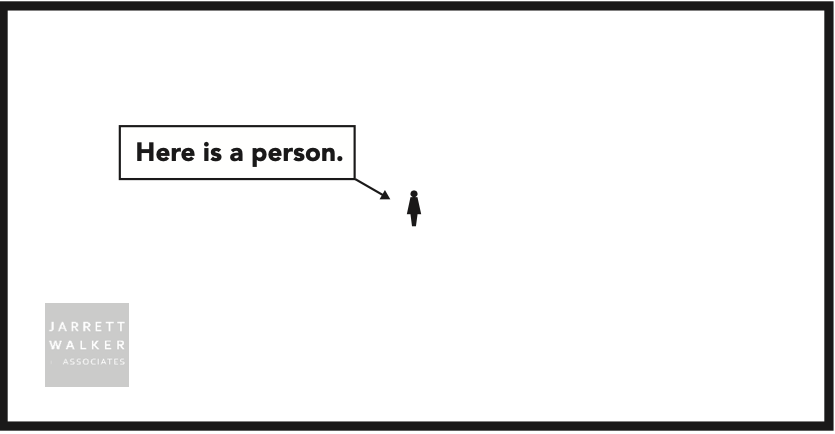
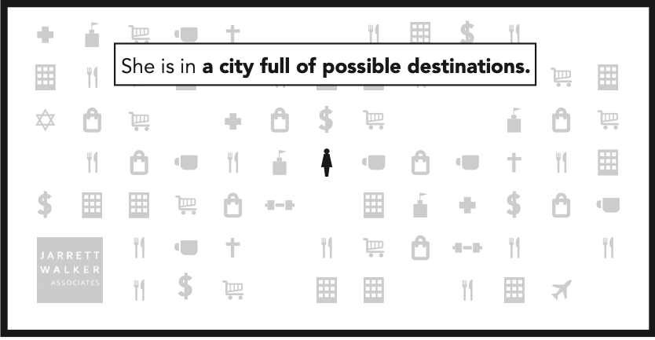
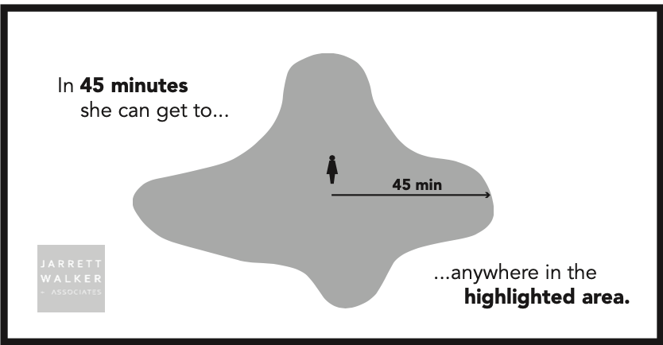
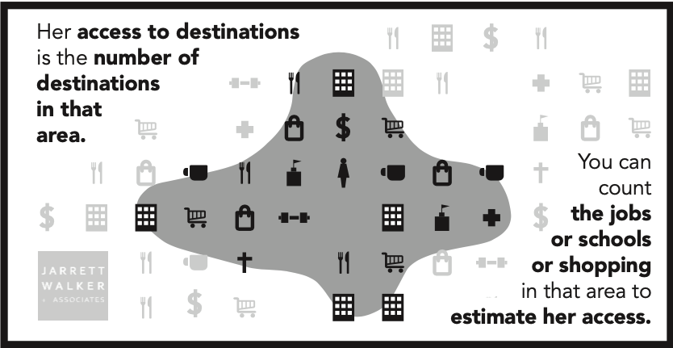

Transit Accessibility
Transit Accessibility Analysis
App Overview
This app shows the countywide transit accessibility for two transit networks. Right now, the app is set to show the differences between Fall 2023 Metro service and Fall 2023 Metro service if Route 7 was deleted. This will eventually change to show actual transit restructure scenarios and/or Metro Connects.
The app can be used to look at access to different types of community assets and jobs throughout a typical week. Use the filters on the map to choose a start time for the trip, a maximum trip length, a display geography and a metric. More on metrics in a minute.
Defining Transit Accessibility
Transit Accessibility: How many places someone can get to using transit in a certain amount of time from their starting location.




Accessibility is important to measure because it can determine how much of a person’s travel needs can be completed on an existing or planned transit network. Countywide analysis of accessibility can highlight transit deserts, which gives planners an opportunity to strategically improve transit connections to important destination. Metro’s strategic plan calls for annual measurements in the change in county-wide transit accessibility.
At a theoretical level, accessibility is simple. However, the process of measuring transit accessibility requires iteration. This is where R plays a critical role, as traditional transit planning tools require planners to manually select analysis locations one-by-one, which is not possible at a county-wide scale.
r5R to the Rescue!
r5R is a network based routing tool that allows analysts to model time-based travel for different modes of transportation. It is an opensource software package made by the firm Conveyal.
r5R uses a java backend, the Open Street Map Network and the GTFS to allow analysts to model time-based travel for different modes of transportation. It allows for use of different time decay functions ( a quick trip to a destination is worth more than a long trip).
A quick look at r5r
Requires:
Open Street Map network file
Origin and destination points
General Transit Feed Specifications (GTFS)
Implements decay curves to model how people perceive opportunities (a quick trip to a destination is worth more than a long trip).
Full documentation available here
r5r at King County
Community Assets Database for destinations
First calculated using a quarter mile hexagon map, then aggregated using population weighted interpolation
Basket of Goods
The idea behind the Basket of Goods metric is that people need to have access to a variety of goods and services to have a high quality of life. By measuring transit access to different types of community assets, we can see how changes to the transit network impact the quality of life in our communities.
Community Asset Groupings
Metrics in the App
Count Baseline
Count Proposed
Change In Asset Count
Percent Change In Asset Count
Basket Of Goods Score Baseline
Basket of Goods Score Proposed
Basket of Goods Difference